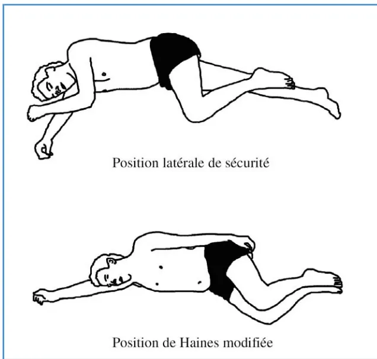

Disponible sur internet le 13 août 2004
COMITÉ D'ORGANISATIONA. Edouard, Coordinateur (anesthésie–réanimation, Le Kremlin-Bicêtre).
GROUPE D'EXPERTSM. Alazia (urgences, Marseille, CRC/Sfara, P. Albaladejo (anesthésie–réanimation, Clichy), J. Albanese (anesthésie–réanimation, Marseille), A. Bioy (UETD, Le Kremlin-Bicêtre), E. Corruble (psychiatrie, Le Kremlin-Bicêtre), C. Dahyot (anesthésie–réanimation, Poitiers), M. Freysz, (anesthésie–réanimation et Samu 21, Dijon), A. Gaston (neuroradiologie, Créteil), M. Gaviria (neurophysiologie, Montpellier), J. Gonzalez (pneumologie, Paris), P. Guigui (chirurgie orthopédique, Clichy), B. Irthum (neurochirurgie, Clermont-Ferrand), J. Kienlen (anesthésie–réanimation, Montpellier), P. Lasjaunias (neuroradiologie, Le Kremlin-Bicêtre), M-A. Le Mouel (rééducation, Coubert), F. Lenfant (anesthésie–réanimation, Dijon), O. Mimos (anesthésie–réanimation, Poitiers), A. Miquel (radiologie, Le Kremlin-Bicêtre), I. Negre (UETD, Le Kremlin-Bicêtre), D. Pateron (urgences, Bondy), T. Pottecher (anesthésie–réanimation, Strasbourg), A. Privat (neurophysiologie, Montpellier), R. Robert, (neurotraumatologie, Nantes), T. Similowski (pneumologie, Paris), K. Tazarourte (Samu 77, Melun), J-M. Vital (chirurgie orthopédique, Bordeaux).
GROUPE DE LECTURET. Albert (rééducation, Coubert), J. Allain (orthopédie, Créteil), C. Ammirati (Samu 80, Amiens), M-C. Antakly (anesthésie–réanimation, Beyrouth), C. Arvieux (anesthésie–réanimation, Brest), G. Audibert (anesthésie–réanimation, Nancy), G. Bagou (Samu 69, Lyon), M. Barat (rééducation, Bordeaux), V. Barttanusz (neurochirurgie, Lausanne), F. Boitot (Samu 78, Versailles), N. Bruder (anesthésie–réanimation, Marseille), P. Carli (Samu 75, Paris), B. Coudert (urgences, Versailles), C. Court (orthopédie, Le Kremlin-Bicêtre), D. Demeure (anesthésie–réanimation, Nantes), J.-F. Desert (rééducation, Coubert), L. Ducros (Samu 75, Paris-Lariboisière), J.-J. Eledjam (anesthésie–réanimation, Nîmes, Président du CRC/Sfar2, N. Engrand (anesthésie–réanimation, Le Kremlin-Bicêtre), B. Fauvage (anesthésie–réanimation, Grenoble), M. Farjani (anesthésie–réanimation, Tunis), J.-W. Fitting (pneumologie, Lausanne), O. Fourcade (anesthésie–réanimation, Toulouse), A. Frey (urgences, Poissy), J.-M. Fuentes (neurochirurgie, Montpellier), O. Gagey (orthopédie, Le Kremlin-Bicêtre), M. Giroud (Samu 95, Pontoise), P. Goldstein (Samu 59, Lille), D. Goutallier (orthopédie, Créteil), P. Gromolard (anesthésie–réanimation, Saint-Etienne), A. Hibon-Ricard (Samu 92, Clichy), J. Koperschmitt (urgences, Strasbourg), Y. Lambert (Samu 78, Versailles), O. Langeron (anesthésie–réanimation, Paris-La Pitié Salpêtrière, CRC/Sfar2, F. Lapierre (neurochirurgie, Poitiers), F. Lapostolle (Samu 93, Bobigny), L. Le Chapelain (rééducation, Lay Saint-Christophe), Y. Malledant (anesthésie–réanimation, Rennes), C. Martin (anesthésie–réanimation, Marseille), F. Martins (rééducation, Coimbra), Y. Menu (Radiologie, Clichy), J.-F. Muir (pneumologie, Rouen), S. Molliex (anesthésie–réanimation, Saint-Etienne), S. Nazarian (orthopédie, Marseille), V. Ninane (pneumologie, Bruxelles), J.-Y. Nordin (orthopédie, Le Kremlin-Bicêtre), C. Nuti (neurochirurgie, Saint-Etienne), J.-G. Passagia (neurochirurgie, Grenoble), D. Payen (anesthésie–réanimation, Paris-Lariboisière), J.-F. Payen (anesthésie–réanimation, Grenoble), M. Pinaud (anesthésie–Réanimation, Nantes, Président de la Sfar), F. De Peretti (orthopédie, Nice), B. Perroin-Verbe (rééducation, Nantes), P. Poidevin (anesthésie–réanimation,
1 En collaboration avec l'Association de neuroanesthésie réanimation de langue française
le Samu de France
la Société française de chirurgie orthopédique et traumatologique
la Société francophone de médecine d'urgence
la Société française de médecine physique et de réadaptation
la Société française de neurochirurgie
la Société francophone de neurochirurgie du rachis
la Société de pneumologie de langue française
2 Comité des référentiels cliniques de la Sfar.
Lille), M. Prevel (urgences, Rueil-Malmaison), N. Prieto (psychiatrie, CUMP/Samu 69, Lyon), F. Proust (neurochirurgie, Rouen), P. Ravussin (anesthésie-réanimation, Sion), B. Riou (urgences, Paris), B. Rossignol (anesthésie-réanimation, Brest), J. Sabatier (neurochirurgie, Toulouse), K. Samii (anesthésie-réanimation, Toulouse), N. Smail (anesthésie-réanimation, Toulouse), M. Tadie (neurochirurgie, Le Kremlin-Bicêtre), B. Tavernier (anesthésie-réanimation, Lille), C. Telion (Samu 75, Paris), M. Thicoipe (Samu 33, Bordeaux), M. Tremoulet (neurochirurgie, Toulouse), B. Veber (anesthésie-réanimation, Rouen), M. Ventura (rééducation, Bruxelles), B. Vermeulen (urgences, Genève), B. Vigue (anesthésie-réanimation, Le Kremlin-Bicêtre), J.-L. Vincent (réanimation, Bruxelles).
P. Gillard (anesthésie-réanimation, Le Kremlin-Bicêtre),
C. Lassner (Sfar).
Plus de mille personnes adultes sont victimes d'un traumatisme de la moelle épinière chaque année en France. Fréquemment de niveau cervical, un traumatisme médullaire provoque un drame humain, social et économique au travers du déficit neurologique. Celui-ci est la conséquence des lésions neurologiques liées à l'impact et surtout à la lésion secondaire de la moelle ; cette lésion peut être limitée ou aggravée par rapport aux dégâts initiaux selon le traitement mis en œuvre.
Prendre en charge un blessé présentant un traumatisme médullaire, suspecté ou évident, est l'œuvre d'une chaîne de soins s'étendant des lieux de l'accident au centre de rééducation pour réinsérer l'individu dans la vie sociale. Le nombre et la multiplicité des acteurs et des lieux rendent probablement compte de l'hétérogénéité fréquemment constatée dans les modalités de soins aux blessés médullaires. Les anesthésistes-réanimateurs aux côtés des médecins urgentistes et des chirurgiens, interviennent souvent à chaque étape : sur les lieux de l'accident avant l'hospitalisation, au cours de l'hospitalisation pour les soins de réanimation, pendant le traitement chirurgical des lésions et pour traiter les syndromes douloureux. Chacun pense faire le meilleur bilan et le meilleur traitement au meilleur moment, mais peu de documents décrivent avec pertinence les modalités de diagnostic et de soins les plus adéquates et la chronologie la plus opportune. Dans ce contexte, l'analyse de la littérature entre dans le cadre des Conférences d'experts organisées par la Société française d'anesthésie et de réanimation. Pour garantir la pertinence de cette analyse, les experts appartiennent aux différentes disciplines impliquées dans cette chaîne de soins sous l'égide de leur société savante. Les
limites chronologiques du projet ont été fixées entre l'accident et la sortie de l'unité de soins intensifs où un séjour est fréquemment nécessaire. Cependant, certains soins spécifiques aux blessés vertébro-médullaires, classiquement du ressort des services de médecine physique et de rééducation, doivent être entrepris dès le séjour dans l'unité de soins intensifs lorsque ce dernier se prolonge dans l'attente d'un transfert.
Le choix des questions a été orienté par le souci de répondre aux interrogations les plus fréquentes qui se posent au cours du traitement des blessés médullaires. Aucune étude ayant un niveau de preuve supérieur au niveau III n'a permis de supporter les réponses des experts aux sept questions posées de telle sorte que les recommandations issues de cette conférence sont de grade D (soutenue par une ou plusieurs études de niveau III) ou de grade E (soutenue par une ou plusieurs études de niveau IV ou V : étude non randomisée avec groupe de sujets témoins historiques, étude de cas, avis d'experts). Les propositions des experts sont parfois précédées d'une mise au point, inhabituelle dans le cadre d'un « texte court », utile pour faciliter la compréhension des recommandations dans ce contexte multidisciplinaire. Rappelons enfin que si le résultat de cette conférence est souvent la recommandation d'un traitement simple dans son concept, précoce dans son exécution et rigoureux dans son application, la recherche fondamentale doit continuer pour limiter la lésion médullaire secondaire et favoriser la régénération neuronale à travers la barrière cicatricielle.
La vascularisation médullaire est plus simple et primitive que la vascularisation cérébrale en raison de son ancienneté phylogénétique. Il existe un double réseau artériel, spinal antérieur et périmédullaire, disposant d'anastomoses au niveau segmentaire des myéromères. Le niveau d'origine de l'artère spinale antérieure ou ventrale est variable. Le développement de la collatéralité est plus important dans le réseau périmédullaire dont les branches se distribuent préférentiellement vers la substance blanche. La densité vasculaire est décroissante du niveau cervical vers le niveau thoracique et lombaire. Le réseau veineux correspond aux réseaux artériels. Il existe des anastomoses veineuses entre la veine spinale antérieure et le réseau veineux périmédullaire et des anastomoses veineuses longitudinales, intersegmentaires entre les myéromères. Le réseau veineux se drene dans les veines caves supérieure et inférieure au travers des veines cervicales, des veines azygos, de la veine
lombaire ascendante et des veines iliaques. Il existe ni sinus veineux au sens intracrânien du terme, ni granulations arachnoïdiennes de Pacchioni au niveau médullorachidien. Ainsi, le réseau veineux médullaire est moins segmenté que le système artériel et les flux sont majoritairement longitudinaux.
L'hémodynamique médullaire est mal connue. Les différences anatomiques entre le cerveau et la moelle, liées au développement du névraxe, ne permettent pas de superposer complètement au niveau médullaire le concept d'hypertension intracrânienne affirmé au niveau encéphalique. Néanmoins, l'existence d'une autorégulation hydraulique du débit sanguin médullaire a été démontrée expérimentalement, en particulier chez les primates, et assure une stabilité du débit sanguin médullaire global malgré de larges variations de la pression artérielle systémique. Un obstacle au drainage veineux dans les plexus épiduraux a un retentissement rapide sur le réseau veineux périmédullaire ; c'est le cas de l'élévation de la pression abdominale (manœuvre de Queckenstedt-Stokey) ou de l'élévation de la pression intrathoracique (manœuvre de Valsalva). Une atteinte isolée du réseau veineux périmédullaire a peu de conséquence néfaste aussi longtemps que le réseau capillaire intrinsèque longitudinal et la veine spinale ventrale permettent de court-circuiter l'obstacle. Inversement, une interruption du flux longitudinal a des conséquences importantes. Il est à noter avec l'âge que les veines de drainage médullaire se thrombosent au niveau de leur émergence méningée, en particulier dans la région thoracique haute.
En traumatologie de la moelle, l'IRM met en évidence des images analogues à celles retrouvées en cas de malformation artério-veineuse. Ceci suggère que les phénomènes d'ischémie médullaire pourraient résulter d'avantage d'une souffrance d'origine veineuse régionale que d'une atteinte artérielle précise, radiculomédullaire ou radiculopiale. Une ischémie d'origine veineuse n'est pas la conséquence de la lésion d'une seule veine émissaire de la moelle et peut se traduire par une symptomatologie « projetée ».
Ces lésions surviennent au-dessus et au-dessous du niveau de la lésion primaire. L'ischémie médullaire est le mécanisme principal de constitution de ces lésions. Un traumatisme médullaire entraîne une perte d'autorégulation rendant le débit sanguin médullaire global et/ou régional complètement dépendant de la pression de perfusion. Chez l'homme, les bornes de cette autorégulation n'ont pas été mises en évidence. Des zones de pénombres ischémiques, de distribution rostrocaudale, participent à l'évolution d'un traumatisme médullaire et pourraient être accessibles à un traitement visant à restituer un débit médullaire dans cette zone. Des phénomènes vasculaires sont impliqués soit au moment de l'impact, soit secondairement au travers d'une anomalie de l'hématose (hypoxie, hypercapnie) ou d'une
anomalie hémodynamique, de lésions macrocirculatoires (vasospasme, thrombose) ou de lésions microcirculatoires (gonflement endothélial, microthromboses, compression extrinsèque par un œdème ou une hémorragie, fuite capillaire). Les conséquences hémodynamiques d'une interruption de l'activité sympathique liée au traumatisme médullaire s'associent aux altérations locales post-traumatiques de la circulation médullaire et participent ainsi à la constitution de lésions secondaires.
L'ensemble de la littérature considère que la pression artérielle est un élément clé pour maintenir un débit sanguin médullaire périlésionnel. Il n'existe aucun moyen clinique de déterminer une « pression de perfusion médullaire » susceptible de représenter un objectif thérapeutique par analogie avec la pression de perfusion cérébrale en sachant que la pression du liquide céphalorachidien et le drainage veineux médullaire doivent être pris en compte pour déterminer le niveau de pression artérielle adéquat. Les études cliniques visant à maintenir une pression artérielle adéquate au cours d'un traumatisme médullaire ont utilisé comme objectif thérapeutique une valeur de pression artérielle moyenne empirique.
Elle doit être évitée et/ou corrigée aussi rapidement que possible chez les blessés médullaires. Cette recommandation s'applique à tous les patients avec une acuité particulière pour les patients victimes d'une lésion cervicale du fait de la fréquence de l'hypotension artérielle et de l'importance fonctionnelle d'une aggravation liée aux lésions secondaires (grade E).
Elle doit être maintenue égale ou supérieure à 80 mmHg dès la prise en charge extrahospitalière et au cours de la première semaine post-traumatique (grade D). Cet objectif de pression artérielle est conservé au cours des interventions chirurgicales réparatrices extrarachidiennes ou rachidiennes, en particulier en cas d'atteinte cervicale.
Il doit être fiable en toutes circonstances pour dépister précocement une hypotension et guider son traitement. Un cathétérisme artériel est nécessaire le plus tôt possible au cours de la prise en charge médicale (grade E).
Il est le premier moyen utilisable pour traiter une hypotension artérielle. Les solutés de remplissage utilisés ne doivent pas être hypotoniques. La perfusion d'un soluté colloïde de synthèse est recommandée de première inten-
tion en cas d'hypotension artérielle (pression artérielle systolique inférieure à 90 mmHg) (grade E).
Elle est utilisable pour corriger rapidement une hypotension artérielle, en complément du remplissage vasculaire. La perfusion d'un vasopresseur permet de limiter le volume de remplissage vasculaire en cas d'association d'un traumatisme vertébroméculaire à une contusion pulmonaire (grade E).
Les élévations excessives de la pression intrathoracique et de la pression intra-abdominopelvienne retentissent sur le drainage veineux médullaire ; elles doivent être dépiquées et corrigées chez les blessés vertébroméculaires (grade E).
Une élévation volontaire excessive de la pression artérielle (pression artérielle moyenne supérieure à 110 mmHg) doit être évitée pour ne pas favoriser l'œdème et l'hémorragie médullaire et ne pas majorer la spoliatio sanguine en cas de lésion vasculaire (grade E).
L'ischémie médullaire post-traumatique provoque une libération massive de glutamate, principal neurotransmetteur excitateur qui se fixe sur les récepteurs postsynaptiques NMDA (N-Méthyl-D-Aspartate). L'œdème cytotoxique est lié à l'accumulation du sodium précédant l'augmentation du calcium intracellulaire, l'activation de protéases cytoplasmiques et la nécrose cellulaire. De même, la reperfusion post-ischémique crée des métabolites toxiques de l'oxygène (et de l'azote) qui provoquent une altération de la membrane cellulaire par une peroxydation lipidique et une destruction de l'ADN. Les deux composantes neurotoxiques sont synergiques pour induire la lésion médullaire secondaire extensive. La réaction inflammatoire locale et les anomalies du métabolisme énergétique favorisent la lésion des neurones dont l'apport en oxygène et en nutriments est limité. Les cicatrices médullaires ultérieures sont composées d'astrocytes associés à des cellules gliales, d'oligodendrocytes, des fibroblastes et de cellules de l'inflammation. La réaction astrogliale est liée à une hyperplasie ou prolifération cellulaire et à une hypertrophie par surexpression de protéines du cytosquelette astrocytaire. Les astrocytes modifiés sont une entrave à la régénération neuronale par un effet mécanique de barrière et par la synthèse de molécules
inhibitrices de croissance. Inversement, l'absence de réaction astrocytaire favorise l'infiltration cellulaire, l'apoptose et la production de cytokines pro-inflammatoires.
L'administration de médicaments destinés à lutter contre les facteurs de nécrose cellulaire tardive constitue un adjuvant thérapeutique classique au décours d'un traumatisme vertébroméculaire. Les inhibiteurs calciques (la nimodipine en association avec une expansion volémique), les antagonistes opiacés (la naloxone), les antagonistes des récepteurs NMDA (la gacyclidine), les gangliosides (GM-I) et surtout les corticoïdes (la méthylprednisolone) ont été employés seuls ou en association au cours de la prise en charge des lésions médullaires cliniques. Les résultats de ces essais sont en général décevants.
L'effet des glucocorticoïdes, en particulier la méthylprednisolone, a été souvent étudié sur les conséquences du traumatisme médullaire expérimental. Quelques-unes de leurs propriétés paraissent adaptées à certains aspects de la physiopathologie des lésions médullaires secondaires : pouvoir stabilisant de membrane, réduction de l'œdème vasogénique, protection de la barrière hématoménigée, augmentation du débit sanguin médullaire, inhibition de la libération d'endorphines, chélation des radicaux libres, limitation de la réaction inflammatoire.
L'utilisation chez l'homme de la méthylprednisolone après un traumatisme médullaire a été dominée par les trois études NASCIS (National Acute Spinal Cord Injury Study) avec leur suivi respectif à un an d'évolution. L'étude NASCIS I a inclus 330 patients répartis en deux groupes selon le traitement : 1000 mg/24 heures ou 100 mg/24 heures pendant dix jours. Cette étude sans groupe placebo n'a révélé aucune différence de récupération motrice ou sensitive entre les deux groupes à six semaines, six mois et un an d'évolution. L'étude NASCIS II a inclus 487 patients répartis en trois groupes : méthylprednisolone (30 mg/kg iv en 60 minutes, puis 5,4 mg/kg par heure pendant 23 heures), naloxone (5,4 mg/kg iv en 60 minutes, puis 4 mg/kg par heure pendant 23 heures) ou un placebo. Une amélioration de la motricité et de la sensibilité a été notée à six mois d'évolution chez les patients recevant la méthylprednisolone moins de huit heures après le traumatisme par comparaison avec les patients recevant le stéroïde plus de huit heures après le traumatisme, la naloxone ou le placebo. Après un an d'évolution, le bénéfice limité à la motricité était noté chez 62 des 487 patients. Il s'agissait des blessés ayant reçu la méthylprednisolone moins de huit heures après le traumatisme et présentant un tableau clinique particulier : paraplégie avec anesthésie complète ou paraparsie avec perte de sensibilité variable. En revanche, les patients ayant reçu la méthylprednisolone ou la naloxone plus de huit heures après le traumatisme avaient une moins bonne récupération que ceux du groupe placebo. L'étude NASCIS III a inclus 499 patients
répartis en trois groupes : méthylprednisolone (30 mg/kg iv en 60 minutes, puis 5,4 mg/kg par heure pendant 23 heures), méthylprednisolone (30 mg/kg iv en 60 minutes, puis 5,4 mg/kg par heure pendant 47 heures ou un lazaroïde, le mesylate de tirilazad). Une amélioration de la motricité a été notée à six semaines et à six mois chez les patients recevant une perfusion prolongée de méthylprednisolone par rapport aux patients des deux autres groupes ; cette amélioration était significative lorsque le stéroïde était administré entre trois et huit heures après le traumatisme. À un an d'évolution, l'état neurologique (examen clinique et récupération fonctionnelle) des patients des trois groupes était identique. Les auteurs de NASCIS III suggéraient que la durée du traitement devrait être proportionnelle au délai de mise en œuvre : 24 heures pour une première administration avant la 3e heure suivant le traumatisme et 48 heures pour une première administration entre la 3e et la 8e heures après le traumatisme. Une augmentation de l'incidence des infections de la plaie opératoire et des hémorragies digestives était notée chez les patients recevant la méthylprednisolone au cours de NASCIS II ; la fréquence des sepsis sévères et des pneumopathies était plus élevée chez les patients recevant la forte posologie de méthylprednisolone au cours de NASCIS III.
Les faiblesses des études NASCIS ont été largement soulignées : largesse des critères d'inclusion (absence de définition d'un niveau pour pouvoir éliminer les syndromes de la queue-de-cheval ou les syndromes mixtes, absence d'exigence d'une atteinte motrice significative), absence de groupe placebo dans NASCIS I et emploi d'un autre médicament pour le troisième groupe de NASCIS II et NASCIS III, prise en charge médicochirurgicale non standardisée au sein des centres et entre les centres, évaluation du bénéfice moteur par un score particulier (six groupes de muscles), présentation des résultats limitée au côté droit des patients, absence d'étude de la récupération fonctionnelle (Functional Independence Measure, FIM), caractéristiques de l'analyse statistique. Les critiques statistiques ont particulièrement visé NASCIS II : erreurs d'interprétation, simplification de l'analyse par sous-groupes, présentation incomplète et inadéquation des risques relatifs, analyse post hoc des résultats limitée à 127 patients. Les études NASCIS sont ainsi considérées au mieux comme des études randomisées avec faible puissance (niveau III), voire comportant des biais inacceptables pour supporter une recommandation de pratique.
Plusieurs études randomisées et contrôlées ou cas-témoins ou rétrospectives, concernant plus de 1000 patients, n'ont pas confirmé les effets bénéfiques de la méthylprednisolone sur la motricité et la récupération fonctionnelle, décrits dans NASCIS II et NASCIS III. Inversement, l'effet néfaste du traitement sur l'immunocompétence, les complications infectieuses (en particulier respiratoires), les hémorragies digestives et la durée de séjour sont fréquemment décrits.
Une étude (étude FLAMME) de phase II, multicentrique, française a inclus 280 patients répartis en quatre groupes : gacyclidine (deux doses à 4 heures d'intervalle de 0,005, 0,010 ou 0,020 mg/kg) ou placebo. L'étude concernait des traumatismes médullaires sévères (72 % de lésions complètes) chez des patients bénéficiant d'une prise en charge médicochirurgicale standardisée et recevant le traitement moins de deux heures après le traumatisme. L'évolution de 228 patients a été suivie à un an. Aucune différence de l'état sensitivomoteur évalué par le score ASIA et de la récupération fonctionnelle évaluée par la FIM n'a été constatée entre les traitements. Toutefois, un gain bilatéral de deux métamères, soit 23 points dans la composante « motricité » du score ASIA, a été mis en évidence à 30 jours du traumatisme, chez les patients présentant une lésion cervicale incomplète et recevant la plus forte dose de gacyclidine, par comparaison avec ceux recevant le placebo. Le gain moteur atténué persistait à un an (1,5 métamères, soit 15 points ASIA) alors que le gain sensitif avait disparu. Le nombre réduit de patients dans chaque sous-groupe n'a pas permis de conclusion formelle. L'absence de gain moteur chez les patients présentant une lésion thoracique incomplète a été attribuée à la faiblesse du score ASIA pour l'analyse des phénomènes survenant entre T2 et L1 et à l'existence du gradient rostro-caudal des récepteurs NMDA.
Ces acides glycolipidiques, sont des composants majeurs du feuillet externe de la membrane cellulaire au niveau du système nerveux central. Le ganglioside GM-1 a des propriétés protectrices vis-à-vis de l'agression in vivo des cultures de neurones granulaires de cervelet et in vitro pour des modèles encéphaliques de lésion ischémique, toxique ou traumatique. Le GM-1 a été peu étudié au cours des traumatismes médullaires expérimentaux. L'utilisation chez l'homme du ganglioside GM-1 au cours d'un traumatisme médullaire a fait l'objet de deux études. La première a inclus 34 patients répartis en deux groupes : GM-1 (100 mg/jour pendant 18 à 32 jour) ou placebo. Le traitement était administré à la fin d'une corticothérapie (méthylprédnisolone : 250 mg iv bolus, puis 125 mg toutes les 6 heures pendant 72 heures). Cette étude sans véritable groupe placebo a mis en évidence un effet bénéfique du traitement sur le score « motricité » ASIA à un an, attribué à une récupération des muscles paralysés plus qu'à une augmentation de la force des muscles parétiques. La seconde étude a inclus un plus grand nombre de patients (797) : 760 d'entre eux ont été étudiés et répartis en trois groupes : GM-1 (300 mg en dose de charge, puis 100 mg/jour pendant 56 jours ou 600 mg en dose de charge, puis 200 mg/jour pendant 56 jours) ou placebo. Tous les patients ont reçu de la méthylprednisolone selon les modalités de NASCIS II et
ont bénéficié d'une prise en charge médicochirurgicale standardisée. L'évolution a été suivie sur une période d'un an. Aucune différence n'a été constatée en fin d'étude en termes de classification de Benzé et de score ASIA, même si une évolution favorable était plus rapidement constatée dans les groupes de patients traités par le GM-I. Aucun effet néfaste n'a été observé au cours de ces études.
Elle appartient à la superfamille des cytokines de type I. La protéine et son récepteur (EPOr) sont exprimés dans le système nerveux central, en particulier dans la moelle et cette expression est modulée par l'hypoxie. L'érythropoïétine a un effet protecteur in vitro sur les cultures de neurones subissant une agression excitotoxique et une privation en sérum ou en facteur de croissance. Cet effet protecteur existe également in vivo dans des modèles d'ischémie neuronale, en particulier traumatique. Cet effet paraît lié à la promotion de la signalétique de survie intracellulaire, à la réduction du calcium intracellulaire, à la diminution de production du monoxyde d'azote, et aux effets antioxydants et anti-inflammatoires. L'administration d'érythropoïétine humaine recombinée (Eprex®, 350, 800 ou 1000 U/kg vs un placebo) par voie intrapéritonéale immédiatement après la reperfusion d'une ischémie médullaire expérimentale chez le lapin (clamping aortique de 20 minutes) améliore la récupération neurologique au réveil. Cet effet correspond à une réduction de l'apoptose neuronale, étudiée en immunohistochimie. L'effet neuroprotecteur de l'érythropoïétine a été étudié dans deux modèles de traumatisme médullaire chez le rat : le clamping médullaire et l'impact. L'érythropoïétine intrapéritonéale administrée immédiatement après la lésion médullaire, améliore la récupération neurologique ; celle-ci est plus tardive après impact qu'après clamping. La posologie de 5000 U/kg en injection unique ou quotidienne pendant sept jours a des effets bénéfiques plus marqués que 500 U/kg en injection quotidienne pendant sept jours. Au-delà du bénéfice clinique, le traitement réduit la cavitation médullaire, l'infiltration cellulaire et l'apoptose neuronale.
En termes de médulloprotection pharmacologique, aucune étude n'a démontré l'efficacité d'un médicament en particulier la méthylprednisolone. La corticothérapie à la posologie préconisée par l'étude NASCIS II n'est pas recommandée au cours d'un traumatisme vertébro-médullaire, car les effets secondaires néfastes sont plus évidents que le bénéfice neurologique (grade D). Cette recommandation s'applique également aux patients victimes d'un traumatisme médullaire sur une myélopathie chronique associée à une anomalie du canal spinal (grade D).
Alors qu'il existe des preuves expérimentales et cliniques d'un effet néfaste de l'hyperglycémie sur la sévérité des lésions cérébrales et la survenue de polyneuropathies acquises en réanimation, son rôle néfaste dans une lésion médullaire a été moins étudié. Fréquente au cours d'un traumatisme médullaire, l'hyperglycémie favorise le vasospasme, l'agression oxydative et l'acidose lactique. Elle entrave la régénération axonale et facilite la peroxydation lipidique des membranes cellulaires. Les résultats des études cliniques en diabétologie, en traumatologie encéphalique et chez les patients non traumatisés hospitalisés en réanimation, permettent de recommander le contrôle étroit de la glycémie chez le blessé médullaire (grade E).
Le sujet de la médulloprotection post-traumatique justifie de nouvelles études au cours desquelles la prise en charge médicale et chirurgicale des patients serait standardisée alors que les lésions médullaires primaires et secondaires seraient analysées par les nouvelles méthodes d'imagerie pour évaluer l'éventuel effet bénéfique d'un traitement en complément de l'examen clinique.
Un retard au diagnostic de traumatisme du rachis cervical a été évoqué chez 24 % des 284 patients étudiés prospectivement entre 1999 et 2001 sur l'initiative de la Sofcot. Toutefois, même s'il existait une méconnaissance de cette lésion particulière, l'amélioration des conditions de prise en charge des blessés avant l'hospitalisation avait réduit la fréquence des aggravations neurologiques en cours de transport à 3 % des blessés par comparaison avec un chiffre de 12 % en 1983. La prise en charge médicale extrahospitalière a une importance considérable car c'est le moment où le diagnostic est évoqué, l'évaluation du handicap et de son retentissement cardiorespiratoire est faite, l'orientation du blessé est déterminée, les conditions cardiorespiratoires souvent précaires sont améliorées. Le premier examen médical est parfois le seul examen neurologique utilisable.
Il doit être évoqué et recherché chez tout blessé grave au cours de la prise en charge extrahospitalière, en particulier
au décours des accidents à cinétique élevée (éjection, chute d'une hauteur supérieure à 5 m, accident avec hyperextension ou hyperflexion du rachis). Chez un patient dont l'état de conscience ne permet pas l'interrogatoire, l'atteinte rachidienne doit être systématiquement suspectée et impose de prendre un ensemble de précautions visant à ne pas entraîner ou aggraver d'éventuelles lésions médullaires associées au contexte de traumatisme. La découverte d'une hypotension artérielle isolée, d'une bradycardie, d'un priapisme ou d'une béance anale sont des éléments très évocateurs.
Tout patient présentant une suspicion d'atteinte rachidienne ou médullaire (quel que soit le niveau lésionnel clinique) doit bénéficier d'une immobilisation stricte du rachis pendant toute la durée de la prise en charge extrahospitalière. La mise en traction du rachis n'est pas recommandée. Certes, la traction axiale du rachis cervical ne modifie pas, voire élargit les dimensions du canal médullaire en cas d'éclatement corporel ou de luxation articulaire. Néanmoins, sa réalisation doit être limitée à la période hospitalière et l'objectif extrahospitalier est d'abord un respect de l'axe rachidien au cours des mobilisations. En cas de nécessité, la position modifiée de Haines (figure hors texte) est une alternative à la position latérale de sécurité : dans cette position, la tête repose sur le bras décline en abduction complète, évitant une flexion latérale du rachis cervical tandis que les deux membres inférieurs parallèles sont fléchis au niveau de la hanche et du genou (grade E). La combinaison d'un collier cervical rigide, adapté avec appui en trois points (mentonnier, occiput et sternal) et d'un matelas à dépression (« matelas coquille ») est recommandée pendant le transport du patient (grade D).
Sans prolonger la durée de la prise en charge extrahospitalière, l'examen neurologique doit être complet et reproductible : outre la description de l'état de conscience (GCS, Glasgow Coma Scale), des pupilles, de la réflexivité ostéotendineuse et cutanée plantaire, il comporte un examen de la sensibilité et de la motricité en utilisant le principe du score ASIA/IMSOP (voir la fiche de recueil proposée à la fin de la question 4) : évaluation de la force musculaire au niveau de groupes de muscles caractéristiques, de la sensibilité tactile et douloureuse au niveau de « points sensitifs » caractéristiques, recherche d'une « épargne sacrée » par l'étude de la sensibilité anale et de la contraction du sphincter anal. L'horaire et les résultats de l'examen doivent être notés et transmis à l'équipe médicale hospitalière qui pourra juger d'une éventuelle aggravation de la lésion médullaire (grade D).
Celle de ces blessés est impérative. Si l'atteinte médullaire cervicale haute est souvent à l'origine d'une détresse
respiratoire précoce, les autres niveaux lésionnels peuvent s'accompagner d'une insuffisance respiratoire retardée au travers du déficit neurologique et des lésions associées. La présence d'une toux efficace, la capacité de pouvoir compter jusqu'à dix sans reprendre son souffle, une ampliation thoracique correcte sont des éléments prédictifs d'une autonomie ventilatoire ultérieure qui doivent être notés dans le dossier extrahospitalier (grade E).
Une mesure de la capacité vitale pourrait être réalisée chez certains blessés dès la période extrahospitalière grâce au développement de spiromètres électroniques miniaturisés. L'évaluation de cette mesure associée à un bilan gaziométrique sanguin en ventilation spontanée pourrait être un objectif de la prise en charge future des blessés vertébrômédullaires.
Il est recommandée selon les modalités décrites dans les réponses à la question 1 dès la phase extrahospitalière (grade D). Si une assistance ventilatoire est nécessaire, l'intubation trachéale est réalisée par voie orale sous laryngoscopie directe après une induction anesthésique à séquence rapide telle que recommandée par la Conférence de consensus de la Sfar (1999). Le bénéfice de la succinylcholine est supérieur au risque lié aux fasciculations, puis au relâchement musculaire (grade E). Lors d'une atteinte cervicale avérée ou très fortement suspectée, l'intubation trachéale est un geste à haut risque qui est rendu plus difficile par la nécessité d'une immobilisation stricte du rachis. La stabilisation manuelle en ligne, sans compression œsophagienne transcricoïdienne (manœuvre de Sellick) est recommandée (grade E). Les moyens pour pallier les difficultés de la laryngoscopie directe en période extra-hospitalière sont : la mobilisation du larynx sans compression (manœuvre BURP : déplacement du larynx vers l'arrière Backward, vers le haut Upward et vers la droite Rightward par un aide), mise en place d'une bougie en gomme dans la trachée pour guider la sonde sans visualisation de la glotte (grade E).
Elle doit s'effectuer rapidement, quand ce dernier présente un traumatisme vertébrômédullaire suspecté ou avéré, vers un établissement hospitalier de référence (grade D). L'établissement hospitalier de référence dispose en permanence des moyens en matériel et en personnel nécessaire au diagnostic et au traitement des lésions vertébrales et des lésions associées (unité de réanimation, équipe chirurgicale multidisciplinaire entraînée, plateau technique d'imagerie complet incluant la scanographie et si possible la remnographie (IRM). Le transport hélicoptère du blessé médullaire est possible si les conditions matérielles le permettent, pourvu que cette modalité de transport ne retarde pas l'hospitalisation. L'association au traumatisme médullaire de lésions hémorragiques sévères et non stabilisées par la prise

en charge extrahospitalière impose le traitement de ces dernières dans l'établissement accessible dans le plus court délai (établissement de proximité). Le transport secondaire du patient vers l'établissement de référence doit être prévu dès la prise en charge primaire par un accord entre le Samu et les correspondants médicaux des deux établissements.
Le traumatisme vertébrômédullaire se présente le plus fréquemment dans le cadre d'un monotraumatisme rachidien, parfois chez un blessé inconscient ou dans le cadre d'un polytraumatisme. L'hospitalisation peut se faire dans un établissement de proximité pour la pratique de soins urgents avant le transfert vers un établissement de référence ou directement dans l'établissement de référence.
Un bilan de base dans la structure hospitalière d'accueil des blessés graves est nécessaire pour dépister une défaillance cardiorespiratoire et rechercher une indication d'intervention en urgence avant le transport du patient dans le service d'imagerie et le transfert éventuel vers l'établissement hospitalier de référence (grade E). La radiographie du rachis cervical supérieur de profil (rayon horizontal) est fréquemment associée aux radiographies du thorax et du
bassin et à l'échographie abdominopelvienne dans la structure d'accueil. Outre l'examen osseux, ce cliché permet une évaluation de l'état des parties molles prérachidiennes et la découverte de corps étrangers de la filière aérodigestive. Les conditions de réalisation du cliché limitent sa valeur diagnostique pour les lésions vertébrales et son interprétation est sous la responsabilité du médecin en charge du patient (grade E).
Le port d'un collier cervical efficace et la mobilisation du patient en respectant l'alignement tête-cou-tronc sont obligatoires chez tous les blessés à risque de traumatisme vertébrômédullaire dans l'attente des examens susceptibles d'éliminer le diagnostic (grade D).
La composante neurologique de l'examen clinique d'un blessé présentant un traumatisme vertébrômédullaire est obtenue en utilisant le score ASIA/IMSOP (figure hors texte) (grade D). Un examen conjoint par le médecin accueillant le blessé et le spécialiste chirurgical en charge des traumatismes vertébrômédullaires est souhaitable ; le résultat de cet examen doit être comparé à celui de l'équipe de prise en charge extrahospitalière. Le score ASIA doit être obtenu dans la mesure du possible avant l'induction d'une anesthésie générale. La possibilité d'examiner un blessé sous anesthésie générale après dissipation spontanée de l'effet des médicaments ou utilisation d'antagonistes peut être envisagée mais la pertinence du score obtenu dans ces conditions ne peut être garantie.
Une doit être obtenue chez tous les blessés sauf lorsque tous les critères suivants sont réunis (grade B) :
En présence d'un syndrome douloureux cervical isolé, l'imagerie du rachis cervical peut se limiter à un examen radiographique standard en connaissant les limites de visualisation des charnières occipitocervicale et cervicothoracique et en précisant que la découverte d'une lésion vertébrale impose la scanographie rachidienne.
C'est l'examen de référence, obligatoire (grade B) :
Elle est indiquée en cas de :
Il est recommandé lorsque le mécanisme du traumatisme ou la nature des lésions rachidiennes suggèrent la possibilité d'une lésion vasculaire, en particulier au niveau des artères vertébrales (grade E).
Ils doivent être réalisés sous contrôle médical et ne sont pas recommandés à la phase précoce de prise en charge d'un blessé (grade D).
Schématiquement, deux situations chirurgicales se présentent du point de vue de l'anesthésiste-réanimateur :
Les modalités techniques précises des interventions chirurgicales ont été exclues des réponses à cette question car des controverses existent et que leur solution n'était pas un objectif de cette conférence d'experts. Quelles que soient ces modalités, la réanimation peropératoire a les mêmes objectifs généraux.
Chez un patient présentant un traumatisme vertébrômédullaire, les objectifs d'une intervention chirurgicale lorsqu'elle est indiquée, sont la réduction du déplacement des structures ostéoarticulaires, la décompression des éléments du canal spinal, l'obtention d'une hémostase régionale (permettant une prévention pharmacologique précoce de la maladie thromboembolique) et la stabilisation définitive des lésions osseuses (simplifiant la mobilisation immédiate du patient pour faciliter les soins) (grade E).
Aucune étude scientifique n'a mis en évidence une relation entre le délai de réalisation d'une intervention chirurgicale et un bénéfice pour le patient en termes de handicap neurologique. Le traitement orthopédique des lésions du rachis cervical à l'aide d'une traction dans l'axe est en revanche une urgence dans l'attente d'une intervention chirurgicale ou comme traitement définitif de certains types de lésions.
La préservation de la fonction neurologique ne doit pas primer sur le risque vital. Le traitement chirurgical de la lésion vertébrômédullaire doit être précédé par le traitement des lésions engageant le pronostic vital au travers d'une hémorragie massive (thoracotomie ou laparotomie d'hémostase, embolisation d'une lésion vasculaire rétro-péritonéale) ou d'une hypertension intracrânienne (évacuation d'un hématome intracrânien avec effet de masse). Certaines lésions ostéo-articulaires peuvent également nécessiter une intervention chirurgicale préalable (fractures ouvertes avec délabrement, fractures tibiale ou fémorale compliquant la mise en décubitus ventral).
Un délai d'intervention bref (entre 6 et 8 heures après l'impact) est recommandable pour opérer les blessés pré-
| D | G | ||
|---|---|---|---|
| C2 | |||
| C3 | |||
| C4 | |||
| C5 | Flexion du coude | ||
| C6 | Extension du poignet | ||
| C7 | Extension du coude | ||
| C8 | Flexion du médius (P3) | ||
| T1 | Abduction du 5e doigt | ||
| T2 | |||
| T3 | |||
| T4 | |||
| T5 | |||
| T6 | |||
| T7 | |||
| T8 | |||
| T9 | |||
| T10 | |||
| T11 | |||
| T12 | |||
| L1 | |||
| L2 | Flexion de la hanche | ||
| L3 | Extension du genou | ||
| L4 | Dorsiflexion de cheville | ||
| L5 | Extension du gros orteil | ||
| S1 | Flexion plantaire de cheville | ||
| S2 | |||
| S3 | |||
| S4-5 |
0 = paralysie totale
1 = contraction visible ou palpable
2 = mouvement actif sans pesanteur
3 = mouvement actif contre pesanteur
4 = mouvement actif contre résistance
5 = mouvement normal
NT, non testable
Score «motricité» : /100
Contraction anale : oui/non
Identité du patient
Date de l'examen
/ / / / / / / / / /
Niveau neurologique* { Sensitif droite gauche
Moteur droite gauche
*Segment le plus caudal ayant une fonction normale
Lésion médullaire**: Complète ou Incomplète
** Caractère incomplet défini par une motricité ou une sensibilité du territoire S4-S5
Échelle d'anomalie ASIA: A B C D E
A = complète : aucune motricité ou sensibilité dans le territoire S4-S5
B = incomplète : la sensibilité mais pas la motricité est préservée au-dessous du niveau lésionnel, en particulier dans le territoire S4-S5
C = incomplète : la motricité est préservée au-dessous du niveau lésionnel et plus de la moitié des muscles testés au-dessous de ce niveau a un score < 3
D = incomplète : la motricité est préservée au-dessous du niveau lésionnel et au moins la moitié des muscles testés au-dessous du niveau a un score > 3
E = normale : la sensibilité et la motricité sont normales
Préservation partielle*** { Sensitif droite gauche
Moteur droite gauche
*** Extension caudale des segments partiellement innervés
Syndrome clinique:
| Toucher | Piqûre | ||
|---|---|---|---|
| D | G | D | G |
| C2 | C2 | ||
| C3 | C3 | ||
| C4 | C4 | ||
| C5 | C5 | ||
| C6 | C6 | ||
| C7 | C7 | ||
| C8 | C8 | ||
| T1 | T1 | ||
| T2 | T2 | ||
| T3 | T3 | ||
| T4 | T4 | ||
| T5 | T5 | ||
| T6 | T6 | ||
| T7 | T7 | ||
| T8 | T8 | ||
| T9 | T9 | ||
| T10 | T10 | ||
| T11 | T11 | ||
| T12 | T12 | ||
| L1 | L1 | ||
| L2 | L2 | ||
| L3 | L3 | ||
| L4 | L4 | ||
| L5 | L5 | ||
| S1 | S1 | ||
| S2 | S2 | ||
| S3 | S3 | ||
| S4-5 | S4-5 | ||
Score «toucher» : /112
Score «piqûre» : /112
Sensibilité anale : oui/non
0 = absente
1 = diminuée
2 = normale
NT, non testable
sentant un traumatisme vertébroméculaire responsable d'un déficit neurologique incomplet ou d'un déficit évolutif, caractérisé par une aggravation lors des examens répétés (grade E).
Le traitement chirurgical peut être différé en cas de déficit neurologique complet associé à une forte probabilité de section médullaire (aspect du canal spinal, aspect radiologique). En cas d'indication opératoire, un délai maximal (48 heures) est recommandable pour opérer les blessés en raison du risque de déplacement secondaire ou d'aggravation extraneurologique qui pourrait contre-indiquer une intervention chirurgicale (grade E).
Le traitement chirurgical d'une lésion rachidienne, de première intention ou après une première séance opératoire, doit être précédé d'un bilan permettant de recueillir les éléments qualifiés de « prérequis » :
Quelles que soient la nature des lésions et les modalités du traitement chirurgical, la pose d'un cathéter artériel est justifiée par la nécessité d'une mesure continue de la pression artérielle pour atteindre l'objectif tensionnel en période opératoire en cas de traumatisme vertébroméculaire, et par le besoin de prélèvements sanguins pour le monitoring biologique. Le sondage gastrique et le sondage vésical sont systématiques chez les blessés vertébroméculaires. La mesure de la température est continue. Le monitoring biologique associe la mesure répétée de l'hémoglobine, l'étude de l'hémostase biologique (associée au recueil des impressions de l'opérateur), de la glycémie (le maintien de la normoglycémie peut justifier la perfusion intraveineuse d'insuline), des gaz du sang et de l'osmolalité sanguine.
Les conditions de mise en place de la sonde d'intubation trachéale sont importantes à évaluer en cas de lésion du
rachis cervical. Sachant que la mobilisation rachidienne sera impossible, elles dépendent de la morphologie du sujet, de l'existence d'une lésion maxillofaciale, de l'amplitude de l'ouverture de bouche et de l'importance de l'hématome pharyngé (lecture du cliché de rachis de profil et de la scanographie).
En cas d'insuffisance respiratoire aiguë, l'intubation oro-trachéale est pratiquée sous anesthésie générale de type crash induction sans compression transcricoïdienne de l'œsophage (manœuvre de Sellick). La succinylcholine n'est utilisable sans risque qu'au cours des 24 premières heures suivant un traumatisme médullaire avec déficit moteur étendu. L'assistance d'un spécialiste chirurgical est nécessaire pendant la laryngoscopie pour maintenir la neutralité de l'axe rachidien.
En l'absence d'insuffisance respiratoire aiguë et en particulier si la laryngoscopie paraît difficile (lésion du rachis cervical supérieur), l'intubation peut être réalisée grâce à une endoscopie pharyngolaryngotrachéale. Le maintien d'une ventilation spontanée efficace impose une simple sédatation du patient, par exemple par le propofol à objectif de concentration, et la réalisation d'une anesthésie locale du tractus respiratoire. La voie orale utilisant une canule échancrée est préférable pour éviter la voie nasale (risque d'épistaxis, calibre de sonde insuffisant). L'utilisation d'une sonde armée n'est pas obligatoire.
En cas d'intubation impossible chez un patient dont l'assistance ventilatoire est possible à l'aide d'un masque facial et dont l'état hémodynamique permet une anesthésie générale profonde, la mise en place d'un masque laryngé est possible pour faciliter l'intubation.
La mobilisation du patient et en particulier le retournement constitue une épreuve hémodynamique pouvant entraîner un collapsus cardiovasculaire, voire un arrêt cardiaque. Le retournement en fin d'intervention est plus risqué que l'installation initiale en raison des conséquences volémiques de l'acte opératoire et de la posture.
L'administration prophylactique de fortes doses d'aprotinine en chirurgie orthopédique programmée diminue le saignement opératoire et la transfusion de produits homologues. L'utilisation d'aprotinine est possible au cours de la chirurgie du rachis traumatique mais aucune étude n'a été conduite pour en évaluer les bénéfices. La transfusion auto-logue par récupération peropératoire du sang épanché est adaptée à la chirurgie du rachis traumatique et permet de réduire de moitié les besoins de transfusion homologue en fonction du seuil transfusionnel proposé. Le monitoring clinique et biologique de l'hémostase et de la numération plaquettaire permet de guider le traitement substitutif par la transfusion de plasma frais et de concentrés plaquettaires.
L'hémorragie se prolonge souvent au cours de l'intervention. Les dispositifs d'autotransfusion postopératoire du sang épanché peuvent remplacer les simples drains aspiratifs
habituels. Néanmoins l'existence de brèches duremériennes peut être à l'origine d'une issue de liquide céphalorachidien dans les drainages du foyer opératoire rachidien. La retransfusion postopératoire du sang épanché pourrait ainsi être limitée.
Les causes d'un arrêt cardiaque peropératoire sont nombreuses : outre l'état antérieur du blessé et la possibilité d'un traumatisme cardiaque fermé, l'hypovolémie, l'hypoxémie et une embolie gazeuse sont les plus souvent mises en cause. La prise en charge de l'arrêt cardiaque pose un problème spécifique lorsque le patient est en décubitus ventral. Le retournement s'impose, mais il peut être difficile et retardé en fonction du déroulement de l'intervention. Dans ce cas, le massage cardiaque externe par compression postéroantérieure, en posant ces deux mains sur le thorax de part et d'autre de l'incision chirurgicale, a été proposé. De même, en cas de trouble du rythme ventriculaire grave, la réalisation d'un choc électrique externe est rendue difficile par la posture et l'installation. La pose systématique d'électrodes adhésives sur la face antérieure du thorax a été également proposée.
Les complications respiratoires et les complications cardiovasculaires, en particulier la maladie thromboembolique, représentent respectivement la première et la deuxième cause de mortalité des patients présentant un traumatisme vertébroméculaire. Les complications uronéphrologiques sont la première cause de morbidité. La durée nécessaire de séjour du patient dans une unité de réanimation ne peut être définie a priori : deux semaines sont souvent citées comme une durée minimale. Une collaboration étroite entre les intervenants de l'unité d'hospitalisation aiguë et ceux du service de médecine physique et de rééducation est recommandée. L'éventuelle prolongation de séjour du blessé méculaire dans l'unité d'hospitalisation aiguë impose une adaptation de ses soins qui réalise une transition indispensable à son hospitalisation ultérieure.
La prise en charge de l'insuffisance respiratoire d'un blessé vertébroméculaire doit être un souci constant, de la phase initiale (maintien d'une fonction vitale) à la sortie de l'hôpital (sevrage du ventilateur et/ou mise en place d'une
ventilation au long cours). Le score ASIA n'apporte aucune information de nature respiratoire. Il est recommandé d'inclure dans le bilan initial une évaluation respiratoire minimale décrite dans les réponses à la question 3 (grade E). La mesure répétée de la capacité vitale et l'évolution gazométrique artérielle sont des compléments indispensables au suivi clinique des blessés médullaires.
En période post-opératoire immédiate, l'aide au désencombrement est l'élément essentiel de la prise en charge. Dans le cas des atteintes cervicales hautes ( et au-dessus), s'ajoute le problème de l'autonomie ventilatoire. La trachéotomie doit alors être envisagée précocement (grade E). Une période de sept jours après un abord cervical antérieur est recommandée pour pratiquer une trachéotomie percutanée plutôt que chirurgicale. Une discussion avec le patient et ses proches sur la possibilité d'une dépendance ventilatoire définitive doit alors être engagée.
Au cours de la période postopératoire tardive, il convient de distinguer trois situations : les lésions infracervicales, les lésions cervicales avec ventilation spontanée et les lésions cervicales avec absence de ventilation spontanée.
6.2.3.1. Les lésions infracervicales. Dans ce cas, le problème principal est l'encombrement trachéobronchique et ses conséquences. Une kinésithérapie de désencombrement intensive est probablement bénéfique (grade D) mais aucune recommandation ne peut être faite sur la technique ou le matériel de physiothérapie à employer (grade E). Il existe toutefois une sous-utilisation des moyens disponibles pour aider au désencombrement, tels qu'ils sont décrits par la Conférence de consensus de la Société de kinésithérapie et réanimation en 1995. L'intérêt des gaines abdominales est uniquement théorique et une utilisation systématique ne peut être recommandée pour améliorer la fonction ventilatoire.
6.2.3.2. Les lésions cervicales avec autonomie respiratoire. Dans ce cas, les problèmes sont le sevrage de la ventilation mécanique et la décanulation trachéale. La problématique du sevrage n'est pas fondamentalement différente de celle des autres pathologies respiratoires. Dans le cas des tétraplégiques, à moyen terme, l'atrophie musculaire va réduire la production de et secondairement les besoins ventilatoires (grade D). Attendre peut donc faciliter le sevrage de la ventilation (grade E). Une fois le sevrage du ventilateur obtenu, la décanulation se fait selon les principes généraux, avec une attention particulière attachée au bilan de la filière respiratoire. Il n'est pas recommandé de rechercher à toutes fins une décanulation précoce (grade E).
6.2.3.3. Les lésions cervicales avec paralysie ventilatoire centrale. Dans cette dernière situation, le problème est celui de la nature définitive ou non de la dépendance ventilatoire. Des données préliminaires, suggèrent que l'étude de la réponse électromyographique du diaphragme à la stimulation magnétique transcrânienne, peut être utile pour prévoir l'autonomie respiratoire (grade E). En l'absence de récupération, le patient sera dépendant d'un ventilateur par trachéotomie. Les conséquences de la trachéotomie sur la phonation, la déglutition, et la nécessité des aspirations doivent être présentées aux patients. Les caractéristiques de sécurité et d'efficacité du ventilateur de domicile doivent être maîtrisées. La stimulation phrénique implantée peut permettre de séparer un patient tétraplégique de son ventilateur. Elle n'est indiquée que dans les lésions de niveau supérieur ou égal à C3.
Au cours de la phase initiale de prise en charge, l'hypotension artérielle persiste chez le blessé médullaire. Il existe une relation directe entre le niveau lésionnel et l'ampleur de l'hypotension artérielle. Il est généralement recommandé de réduire la capacité du patient par ailleurs « normovolémique », au cours des modifications de posture par des moyens mécaniques : bas de contention, sangle abdominale limitant le stockage déclinant du sang dans le territoire splanchnique (grade E). Une approche pharmacologique de l'hypotension orthostatique liée à un traumatisme médullaire est parfois proposée par analogie avec les hypotensions orthostatiques non-traumatiques (grade E). Plus de soixante substances ont été administrées : la fludrocortisone, les amines sympathomimétiques (phénylpropanolamine, éphédrine) la somatostatine et ses analogues (octréotide), la caféine, les agonistes des récepteurs à la vasopressine, les antagonistes de la dopamine et les alcaloïdes de l'ergot de seigle (dihydroergotamine). Plus récemment, le chlorhydrate de midodrine (Gutron®) a été utilisé en monothérapie chez des patients présentant une hypotension orthostatique liée à une lésion médullaire, résistant au traitement habituel. L'effet bénéfique des agonistes alpha-adrénergiques telle cette prodrogue, ne doit pas faire oublier l'augmentation de sensibilité des récepteurs adrénergiques post-synaptiques chez ces patients avec un risque d'hypertension artérielle de décubitus.
Celle observée au repos chez les blessés médullaires et persistant souvent au cours des épisodes d'hypotension, témoigne de l'hypertonie vagale, démontrée par les analyses de la variabilité de fréquence cardiaque. L'évolution chronologique du risque de bradycardie est démontrée : majeur au 4e jour, il persiste pendant les deux premières semaines
post-traumatiques et s'atténue pour observer un retour à la normale deux à six semaines après le traumatisme. La bradycardie est favorisée par les soins respiratoires chez les patients présentant une atteinte médullaire haute et une dépendance à l'égard de l'assistance ventilatoire et justifie une prémédication vagolytique lors de ces soins (grade E).
L'hypperréflexivité autonome représente un aspect particulier de dysautonomie médullaire survenant chez le patient atteint d'une lésion médullaire située au-dessus de T6. Elle se traduit par une élévation importante et brutale de la pression artérielle en réponse à une stimulation appliquée dans le territoire sous-lésionnel. La nature de la stimulation est variable : urologique (distension vésicale, stimulation de la zone urétrale par manœuvre endoscopique, infections urinaires, lithiases urinaires, dyssynergie vésicosphinctérienne), anorectale (fissure anale, fécalome), génitale (éjaculation, accouchement) ou autres (escarres, fractures, abcès). Probablement au travers d'un arc réflexe spinal et d'une hypersensibilité des récepteurs adrénergiques dans les territoires « dénervés », la stimulation nociceptive provoque une vasoconstriction intense musculocutanée et une hypertension artérielle. L'incidence de cette hypperréflexivité autonome varie de 48 à 90 % des patients présentant une lésion médullaire complète ou incomplète, de niveau supérieur à T6. Elle peut apparaître à l'occasion d'un accouchement chez des femmes dont le niveau lésionnel est inférieur à T6. Les symptômes sont très variés : sueurs sus-lésionnelles, érythème cervicothoracique, paresthésies, tremblements, sensation de soif intense, gêne respiratoire, obstruction nasale, anxiété, nausées. L'augmentation de la pression artérielle peut être majeure : 250 à 300 mmHg pour la pression systolique et plus de 200 mmHg pour la pression diastolique. Cette hypertension s'accompagne de céphalées violentes, pulsatiles et rétro-orbitaires. Elle peut entraîner un accident vasculaire cérébral hémorragique et au travers du renforcement réflexe du frein vagal, une bradycardie voire un arrêt cardiaque.
L'incidence diminue du fait de l'amélioration de prise en charge de ces patients, en particulier sur le plan urologique. La composante thérapeutique majeure du traitement est d'identifier et de traiter la stimulation nociceptive : vérification de la perméabilité d'une sonde vésicale, vérification de l'absence de rétention d'urines en cas de sondages intermittents, réduction de la stimulation anorectale. Le changement de posture peut contribuer au contrôle de l'hypertension artérielle (position proclive ou assise). Sur le plan pharmacologique, les inhibiteurs calciques de type dihydropyridine sont moins employés en raison de la sévérité de l'hypotension artérielle secondaire et les dérivés nitrés sont évités chez les patients qui utilisent le sildénafil. Le captopril (25 mg par voie sublinguale) est le plus souvent proposé pour traiter les manifestations hypertensives aiguës de la dysautonomie (grade E).
Les blessés médullaires sont les traumatisés les plus exposés au risque de thrombose veineuse et d'embolie pulmonaire. La notion d'une apparition retardée de la thrombose veineuse à partir du 3e jour suivant le traumatisme ne repose que sur une seule étude ancienne. Le risque de maladie thrombo-embolique diminue avec le temps. La majorité des thromboses (79 à 90 %) survient au cours des trois premiers mois. La prévention médicamenteuse est interrompue entre le 3e et le sixième mois selon les éventuels facteurs de risque surajoutés et la possibilité d'une mobilisation volontaire des membres inférieurs.
La valeur du diagnostic clinique de thrombose veineuse est faible chez le blessé médullaire. Le dosage des D-Dimères malgré une valeur prédictive négative de 100 % a peu de place à la phase aigüe dans un contexte traumatique. La valeur diagnostique de l'échographie-doppler des veines des membres inférieurs reste discutée chez les blessés médullaires ; la phlébographie conventionnelle est encore l'examen de référence pour certains (grade D).
Le sondage vésical à demeure et prolongé doit être évité chez les blessés médullaires. En cas de nécessité, la procé-
ture de sondage est commune avec celle de la population générale. Le changement systématique de sonde vésicale est conseillé avec une périodicité dépendant du matériel utilisé. Aucune injection intravésicale d'antiseptique ou d'acidifiant n'a fait la preuve de son efficacité pour la prévention des infections urinaires (grade D).
Le sondage vésical intermittent propre est recommandé le plus tôt possible au cours de l'hospitalisation du patient (grade E). La technique permet une réduction des bactériuries asymptomatiques, des infections urinaires basses et hautes et des complications génitales. La technique est d'abord pratiquée par le personnel soignant ; le soin s'accompagne d'une évaluation de la continence du blessé entre les sondages (6 à 8 par 24 heures en début de séjour). L'éducation du blessé médullaire à l'autosondage doit être précocement envisagée dans les limites du handicap.
La souffrance psychologique survient lorsque le patient se sent démuní face à cette situation nouvelle qu'il juge inacceptable. Cette souffrance touche diverses sphères de son psychisme : perturbation de l'image de soi avec sentiment d'étrangeté par rapport au corps et difficulté à supporter la visibilité du handicap, perte d'autonomie avec difficulté à accepter la dépendance physique, rupture de la dynamique de vie avec anéantissement des projets et des priorités, sentiment d'impuissance et de perte du contrôle de la vie et du corps. Le niveau de souffrance psychologique est dépendant et potentialisé par l'importance des complications somatiques liées au traumatisme, à la douleur physique et à l'équilibre psychosocial.
Au cours des premiers jours post-traumatiques, le patient est fréquemment dans l'incapacité de mobiliser ses ressources psychiques constructives pour faire face et ne peut assimiler la situation ; c'est la phase de sidération. Certains comportements sont typiques de cette phase et sont des indicateurs de la détresse psychique : le déni, la colère, voire le vécu persécutif, la régression, le lâcher-prise et la symptomatologie anxiodépressive. Un tableau confusodélirant d'allure faussement psychotique peut apparaître à ce stade.
La dépression est fréquente (60 % des cas), précoce et importante chez les blessés vertébrômédullaires dès lors qu'il existe un vécu de perte : perte de la station verticale, de l'autonomie, de la sensibilité, de l'intégrité corporelle, du travail, de liens sociaux et de liens amicaux. La dépression est
aussi associée à une souffrance narcissique car le patient ne se reconnaît plus et souffre de l'image qu'il renvoie aux autres. La dépression est favorisée par un faible niveau d'extraversion et par l'existence d'une psychopathologie antérieure.
L'anxiété est fréquemment sous-évaluée par rapport à la dépression. Cette réaction provoque un sentiment de malaise, d'inquiétude, de doute, de crainte, de terreur ou d'appréhension avec des traductions physiques au travers du système nerveux autonome. L'anxiété est associée à l'incertitude quant à l'avenir physique et social, à la crainte des douleurs liées aux soins et à la peur du regard des autres sur le handicap. Elle dépend du niveau de l'atteinte physique et de l'âge du patient avec une prépondérance de l'anxiété chez les sujets jeunes.
La vie émotionnelle correspondant à la façon subjective dont le patient ressent les événements de sa vie, dépend du niveau de contrôle ressenti sur la situation. La qualité de la vie émotionnelle dépend de l'absence de syndrome dépressif, du maintien des relations sociales, de la qualité de la mobilité et du niveau d'indépendance. Elle est entravée par les responsabilités familiales, la difficulté de trouver un nouveau sens à la vie et de définir des priorités, l'incertitude quant à la capacité psychologique à faire face, les expériences passées négatives et le flou des objectifs soignants.
Plus de 60 % des blessés médullaires ont des douleurs après leur traumatisme. L'enquête Tetrafigap, réalisée en 1996 en France, Suisse et Belgique, concerne 1668 patients et révèle que 74 % d'entre eux sont douloureux, fréquemment (36 %) ou occasionnellement (38 %). La douleur est un symptôme aussi fréquent que les contractures (85 %) et plus fréquent que la constipation (37 %) ou les difficultés urinaires (56 %). Elle est plus fréquente lorsque le déficit est incomplet, mais plus intense lorsque le déficit est complet. Les études individualisent rarement la période précoce : 96 % des patients seraient douloureux lors de la première hospitalisation et pendant cinq semaines. La douleur prédomine à l'étage thoracique et aux membres. L'intensité douloureuse diminue au cours de la période précoce, mais tend à s'élever à son niveau initial après la première année, avec une prédominance de douleur à caractère neuropathique : un quart des patients douloureux à six semaines sont douloureux à un an. La forte prévalence de la douleur et ses relations avec la qualité de la réhabilitation et avec l'anxiété et la dépression impose sa prise en charge précoce, avec autant d'attention que les autres conséquences du traumatisme. Malgré l'abondante littérature concernant la fréquence de la symptomatologie douloureuse, 7 % seulement des patients reçoivent des médicaments antalgiques adaptés.
La lésion médullaire n'est pas seulement une interruption dans un circuit de transmission : la neuroplasticité induit, aux
niveaux médullaire et cortical, de nombreuses modifications des processus d'intégration de la région lésée et des régions voisines, qui vont s'installer plus ou moins progressivement. On constate un bouleversement des fonctionnements et des réorganisations des systèmes moteurs et sensitifs impliquant la quasi-totalité du système nerveux central, incluant la moelle, le tronc cérébral, le thalamus et le cortex. Les mécanismes de cette plasticité sont complexes : la transmission GABA est altérée précocement alors que les transformations des fibres elles-mêmes sont plus tardives : dégénérescence ou régénération axonale, réorganisation sensitive...
Les différents types de douleur spécifiques au traumatisme médullaire sont d'origine centrale et semblent varier avec l'évolution : jusqu'à six mois, les douleurs sont de caractère nociceptif ou musculosquelettique (40 %), neuropathique (36 %) mais non viscéral. Elles sont sévères dans 21 % des cas. Les patients présentant une douleur sous-lésionnelle ont les scores d'intensité douloureuse les plus élevés. Par ailleurs, les douleurs neuropathiques avec allodynie sont plus fréquentes lorsque la lésion est incomplète.
L'apparition de la spasticité est souvent précoce : 8 % le jour de l'admission et 15 % entre le deuxième et le soixantième jour post-traumatique. Elle peut être fluctuante durant la journée (lésions cervicales) ou constante (lésions thoraciques). Elle diminue avec la mobilisation douce et répétée mais est majorée par les lésions de décubitus. Elle est souvent associée aux contractures. Les patients présentant un traumatisme crânien associé ont deux fois plus de risque de présenter des contractures. La prévention des contractures est très importante.
L'évaluation de la douleur est indispensable. Dans les premières heures, les échelles d'autoévaluation unidimensionnelles (les échelles verbales sont les mieux acceptées : ENS, EVS) peuvent être utilisées lorsque cela est possible. Mais la douleur des blessés médullaires est souvent multifocale : il est donc nécessaire d'individualiser chaque douleur par sa localisation, son type, son intensité et son évolution sous traitement.
Celui prenant en charge les blessés médullaires doit disposer d'une unité d'évaluation et de traitement de la douleur (UETD) au sein de laquelle psychologue et psychiatre font une analyse du retentissement psychique du traumatisme, dépiènt une psychopathologie sous-jacente et contribuent au traitement de la souffrance et de la douleur (grade E).
C'est un moment essentiel de la prise en charge d'un patient présentant un traumatisme vertébro-médullaire. L'annonce doit être précoce et adaptée à chaque patient. Le bénéfice d'un effet structurant sur le patient s'oppose au risque d'une aggravation du traumatisme psychologique. L'annonce peut être totale ou fragmentée dans le temps en fonction du désir de savoir du patient et de ses capacités à mobiliser des ressources pour faire face. L'annonce consiste en la notification au patient d'une réalité médicale objective : la lésion de la moelle épinière et les limitations fonctionnelles connues en fonction du type et de la localisation de la lésion. Le patient doit être garanti d'une information continue dans le temps, à mesure que la réalité détaillée de ses handicaps, tout autant que de ses progrès, sera mise à jour. L'annonce ne doit pas gommer la perspective de progrès futurs et il est nécessaire de différencier dans le discours l'avenir proche, l'avenir prévisible et l'avenir lointain. L'annonce est le début d'une démarche de l'équipe soignante et les réactions du patient au cours de l'annonce doivent être analysées. Certaines attitudes constituent des mécanismes de défense classiques : évitement et passivité, fuite dans la rééducation, déni du diagnostic et désaveu avec remise en cause du savoir médical.
Elle est une étape essentielle de la prise en charge des blessés médullaires. Elle repose sur l'absence de lésions du
revêtement cutané aux points d'appui, la mobilisation douce et régulière des membres concernés par la lésion neurologique, la suppression des « épines irritatives » au niveau des lésions osseuses ou de leur traitement, la formation du personnel et l'évaluation régulière de la qualité des soins.
La prise en charge de blessés médullaires impose une lourde charge de soins techniques dès la phase précoce, justifiant un personnel soignant en nombre adéquat, recevant une formation spécifique (éducation des patients, détermination des objectifs de gain d'autonomie, encadrement des échecs) et bénéficiant d'une attention particulière en raison du risque élevé d'épuisement professionnel.